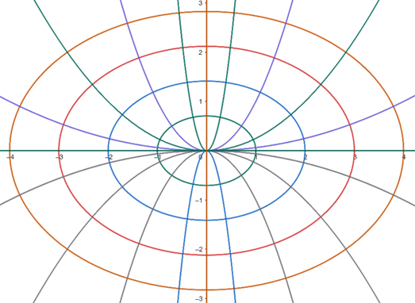

Table of Contents
Separable Equations
Discussion
A first order differential equation is separable if the two variables can be
separated, that is all the $x$'s on one side of the equation and all the $y$'s
on the other side of the equation. We then solve the problem by integrating
both sides of the equation.
(This is our first case where it will be
convenient to forget that $y$ is a function and treat it as a variable.)
Consider the following example.
$$ \frac{dy}{dx}=xy^2+x.$$
We separate the variables by factoring the right hand side and then dividing
through by $y^2+1$ to get
$$ \frac{dy}{y^2+1}=x\,dx $$
We then integrate both sides to get an implicit solution
$\arctan(y)=\displaystyle{\frac{x^2}{2}}+C$. Finally we solve for $y$ to
get
$$ y(x)=\tan(\frac{x^2}{2}+C). $$
You can check that this is a solution to the differential equation. This
process should be a little disturbing. $dy/dx$ is a notation for the
derivative
of $y$ with respect to $x$, but the terms $dy$ and $dx$ are just part of the
notation
and have no independent meaning. Yet we just manipulated them like any other
algebraic quantity. It is possible to prove that the technique given will
always work, but I won't bother to go through the details (if you're curious,
stop by my office sometime). $dy$ and $dx$ are called
differentials. We
will often
find it convenient to manipulate differentials rather than whole derivatives;
this is why the subject is called differential equations rather than
derivative equations. This manipulation of differentials can be thought of as
a useful mnemonic to remember how to solve these equations. The fact that the
"obvious'' manipulations produce correct answers is a large part of the
reason
why the $dy/dx$ notation was adopted. Another point is that we included the
constant of integration $C$ for the $x$ integral but not for the $y$ integral.
We
did that because if we included both constants of integration, the next step
would have been to subtract the $y$-constant of integration from both sides
of the equation and we would have had the same expression, except with
$x$-constant minus $y$-constant instead of C. But the difference of two
arbitrary
constants is just another arbitrary constant so why bother.
Finally, there is a common
algebraic error waiting to mug unwary students in these equations. Consider
the following example.
$$\frac{dy}{dx}=y^2-1$$
We solve this in the same manner as earlier by dividing through by $y^2-1$
to get the separated equation
$$\frac{dy}{y^2-1}=dx$$
and then integrate both sides to get
the implicit
solution $\frac12\ln\left|\displaystyle\frac{y-1}{y+1}\right|=x+C$. We
solve this for the
general solution. First we multiply by 2 and exponentiate both sides to get
$\left|\displaystyle\frac{y-1}{y+1}\right|=e^{2C}e^{2x}$.
We then remove the $|$ $|$ signs by taking $\pm$ the right hand side and solve
for $y$ to get the explicit solution
$$ y(x)=\frac{1+ke^{2x}}{1-ke^{2x}} $$
(where $k=\pm e^{2C}$).
This is the general solution; it is a solution with one arbitrary constant, k,
to a first order equation. But it doesn't give all the solutions! You can
quickly check that $y = -1$ is a solution, but there is no choice of $k$ that
gives this solution. A solution not part of the general solution is called a
singular solution. So where did we lose this solution? In the first
step
when we divided by $y^2-1$. If $y = -1$, then we divided by 0 which is always
trouble.
A general rule of algebra, which students often miss, is that whenever you
divide by an expression involving a variable, you must check separately to see
if the
$\text{expression}=0$ is a solution. You might also note that $y=1$,
corresponding to $k=0$ is also a solution. Since $k=\pm e^C$, it should not be
the case that $k=0$. This is an example of a singular solution for the
implicit solution reappearing in the explicit solution. Basically we lost a
solution via careless algebraic manipulations in finding the implicit solution
but we got it back by making careless algebraic manipulations (letting $k=0$)
in finding the explicit solution. This happy accident is not uncommon and I
won't comment on it in the future. You should note that singular solutions are
real solutions and are just as natural as the general solution. The
distinction between the singular and the general solution is just an algebraic
distinction.
We are now ready to give the paradigm for solving separable equations.
Paradigm
Find all the solutions to $\displaystyle\frac{dy}{dx}=xy+\frac yx$
STEP 1: Separate the variables
$$ \begin{align}
\frac{dy}{dx}&=(x+1/x)y \\
\frac{dy}{y}&=(x+1/x)\,dx
\end{align} $$
STEP 2: Integrate both sides
$$\begin{align}
\int\frac{dy}{y}&=\int x+1/x\,dx \\
\ln|y|&=\frac{x^2}{2}+\ln|x|+C\qquad\qquad\text{(Implicit Solution)}
\end{align} $$
STEP 3: Solve for the explicit solution (if possible)
$$\begin{align}
|y|&=e^C|x|e^{x^2/2} \\
y&=\pm e^Cxe^{x^2/2}=kxe^{x^2/2}\qquad\qquad(k=\pm e^C)
\end{align} $$
STEP 4: Check for singular solutions.
We divided by $y$ and $y=0$ is clearly a solution. But it is already part of
the general solution with $k=0$, so there are no singular solutions.
Example 1: An Implicit Solution
Find all the solutions of
$\displaystyle\frac{dy}{dx}=\cos(x)\cos(y)+\cos(y)$
Step 1: $\displaystyle\frac{dy}{\cos(y)}=(\cos(x)+1)\,dx$
Step 2: $\ln|\sec(y)+\tan(y)|=\sin(x)+x+C$
Step 3: I can't begin to solve this for $y$, so I will just leave it with
the
implicit solution.
Step 4: We divided by $\cos(y)$ and $\cos(y)=0$ when $y=(2n+1)\pi/2$ with
$n$ any integer. These are all solutions, as you should
check, and none of these are examples of the general solution, so they are all
singular solutions.
Example 2: An Initial Value Problem
Solve the initial value problem
$$\begin{align}
\frac{dx}{dt}&=xt+2t-x-2, \\
x(0)&=1.
\end{align}$$
Step 1:
$$\begin{align}
\frac{dx}{dt}=(x+2)(t-1). \\
\frac{dx}{x+2}=t-1 dt.
\end{align}$$
Step 2:
$$\begin{align}
\int \frac{dx}{x+2} &= \int t-1\,dt. \\
\ln(x+2)&=t^2/2 - t + C.
\end{align}$$
Step 3:
$$\begin{align}
x + 2 &= \exp(t^2/2 - t + C). \\
x &= k\exp(t^2/2 - t) - 2.
\end{align}$$
Not Step 4:
For an initial value problem, we don't need every solution. We just need the
solution that satisfies the initial condition. So rather than check for singular
solutions, we just plug in the initial values $t=0$ and $x=1$ and solve for the constant $k$.
$$\begin{align}
1 &= k\exp(0) - 2. \\
3 &= k.
\end{align}$$
So the solution to the initial value problem is
$$ x = 3\exp(t^2/2 - t) - 2.$$
Example 3: A Singular Solution
Solve the initial value problem
$$\begin{align}
\frac{dy}{dx} &= y^2 - 4 \\
y(0) &= -2
\end{align}$$
Step 1:
$$ \frac{dy}{y^2-4} = dx. $$
Step 2:
$$\begin{align}
\int \frac{dy}{(y+2)(y-2)} &= \int\,dx \\
\int \frac{1/4}{y-2} - \frac{1/4}{y+2}\,dy &= \int\,dx \\
(1/4)\ln\left(\frac{y-2}{y+2}\right) &= x + C
\end{align}$$
Step 3:
$$ \begin{align}
\frac{y-2}{y+2} &= \exp{4x + C} = k\exp(4x) \\
y-2 &= k\exp(4x)y + 2k\exp(4x) \\
y(1 - k\exp(4x)) &= 2 + 2k\exp(4x) \\
y &= 2\frac{1+k\exp(4x)}{1-k\exp(4x)}
\end{align}$$
Not Step 4 (yet):
Plugging in $x=0$ and $y=-2$ we get
$$\begin{align}
-2 &= 2\frac{1+k}{1-k} \\
-2+2k &= 2 + 2k \\
-2 &= 2
\end{align}$$
Oops, something went wrong. The initial condition $y(0)=-2$ doesn't correspond to
the general solution we found for any value of $k$. That means it must correspond to a singular solution.
So while in the previous example we could skip Step 4, this time we are going to have
to check for singular solutions. While skipping Step 4 initially cost us a little
time in this example, it saved us time in the previous example. In practice, I've found I can
usually recognize a singular solution quickly during Step 2. After all, if you are just asked to
solve an initial value problem, once you see a solution, you can stop. But I wanted to give an
example where you saw what happened with a singular solution that you didn't recognize immediately
so you wouldn't get flustered if you encountered something like $2 = -2$ while working a test question.
Step 4:
We divided by $y^2-4$, so we need to check when $y^2 - 4 = 0$. This happens when
$y=2$ or $y=-2$, and we immediately note that $y=-2$ satisfies the initial condition.
So the solution to the initial value problem is the constant function, $y=-2$.
Example 4: Orthogonal Trajectories
Polar coordinates are useful in problems which are defined on a disk, since
$r=Constant$ is a circle. However, sometimes you have more complicated regions to
consider. One night when I was in graduate school, Ralph, who lived across the hall and was studying
plasma physics, talked about a problem he had been assigned dealing with a particle accelerator with
an elliptical cross-section and the coordinate system that was needed for that problem.
Since this isn't a graduate course, we'll look at a simplified version.
Suppose you have a coordinate system in the plane. One variable $s$ is defined by the
equation $$x^2 + 2y^2 = s^2$$
so $s=C$ is an ellipse (centered on the origin and with eccentricity $\sqrt{2}/2$) for every choice of the constant $C$.
Now you need to define a second coordinate, call it $\phi$, to fix a point in the plane.
It is usually helpful if the two coordinates are orthogonal, that is if $s=C_1$ and $\phi=C_2$
always meet at a right angle. Note that this is true for both rectangular and polar coordinates.
The lines $x=C_1$ and $y=C_2$ always meet at right angles, and so do $r=C_1$ and $\theta=C_2$.
So to define $\phi$, we need to find the "orthogonal trajectories" to the curves
$x^2+2y^2=C^2$, that is, the curves that always intersect $x^2+2y^2=C^2$ at a right angle.
This motivates our problem:
Find the orthogonal trajectories to the family of curves $x^2+2y^2=C^2$
At any point, the slope of the tangent line to $x^2+2y^2=C^2$ can be found by implicit differentiation.
$$
\begin{align}
2x+4yy'&=0 \\
y'&=-\frac{x}{2y}.
\end{align}
$$
Since two curves are orthogonal if their slopes are negative reciprocals,
the orthogonal trajectories to $x^2+2y^2=C^2$ are the curves satisfying
$$ \frac{dy}{dx} = \frac{2y}{x}. $$
This is a separable equation, and we solve it as follows:
$$
\begin{align}
\frac{dy}{dx}&=\frac{2y}{x} \\
\frac{dy}{y}&=\frac{2dx}{x} \\
\int \frac{dy}{y} &= \int \frac{2dx}{x} \\
\ln|y| &= 2\ln|x| + C \\
y&=kx^2
\end{align}
$$
So the family of parabolas $y=kx^2$ are orthogonal trajectories to the ellipses $x^2+2y^2=C^2$.

However, looking at the image, you can see that the $y$-axis is also an orthogonal trajectory to the
family of ellipses. Of course, since the slope of the $y$-axis is always undefined, it can't be a solution
to the differential equation. It is always a good idea once you think you have finished a problem to
go back and review the original problem you were trying to solve and check your answer. Once we include
the $y$-axis along with the curves $y=kx^2$, we have indeed found all the orthogonal trajectories, which
is the problem given above. But if you are interested in how to use this to find a good second coordinate
for an elliptical coordinate system, one approach is to let
$s=s_0$ and $\phi=\phi_0$ where $s_0>0$ and $-\pi\le\phi_0\le\pi$ correspond to the intersection of
$x^2 + y^2 = s_0^2$ and $y=\pm\tan(\phi_0)x^2$, where $\phi=\pm\pi$ corresponds to the $y$-axis and we use the
intersection in the quadrant corresponding to an angle of $\phi_0$ in polar coordinates.
Practice Problems
A randomly generated practice problem is below. Once you submit an answer, you will have a link to see the detailed
solution for the problem, as well as the option to generate a new problem. Note that you can just quickly enter
a "dummy" answer like $y=x$ to quickly get to the detailed solution if that is all you want to see.
©1994-2026 Andrew G. Bennett